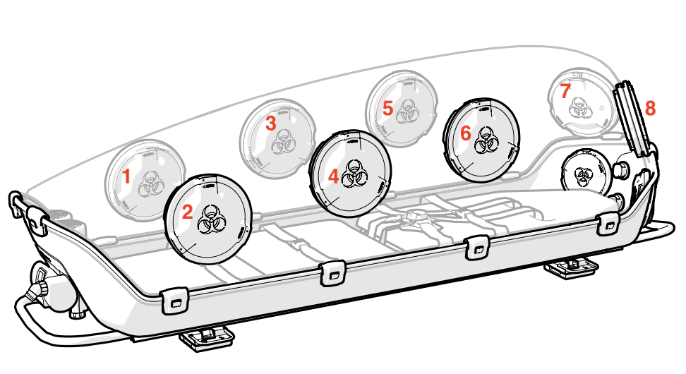
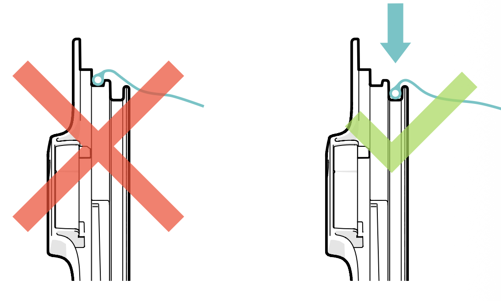
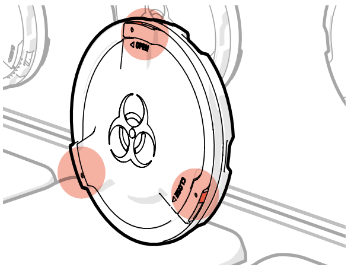
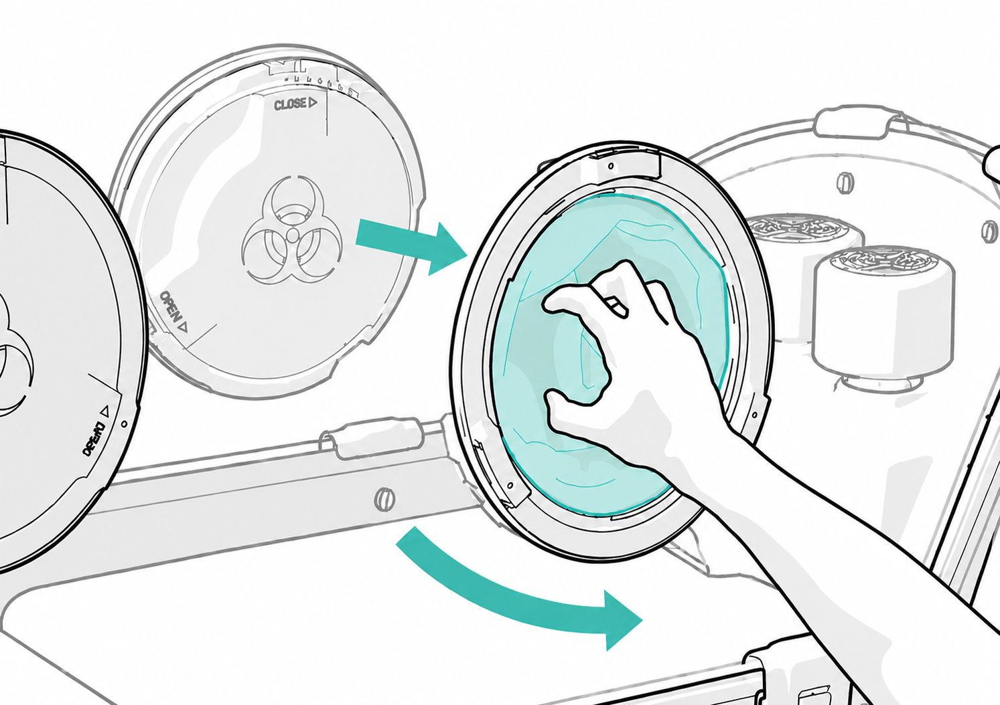
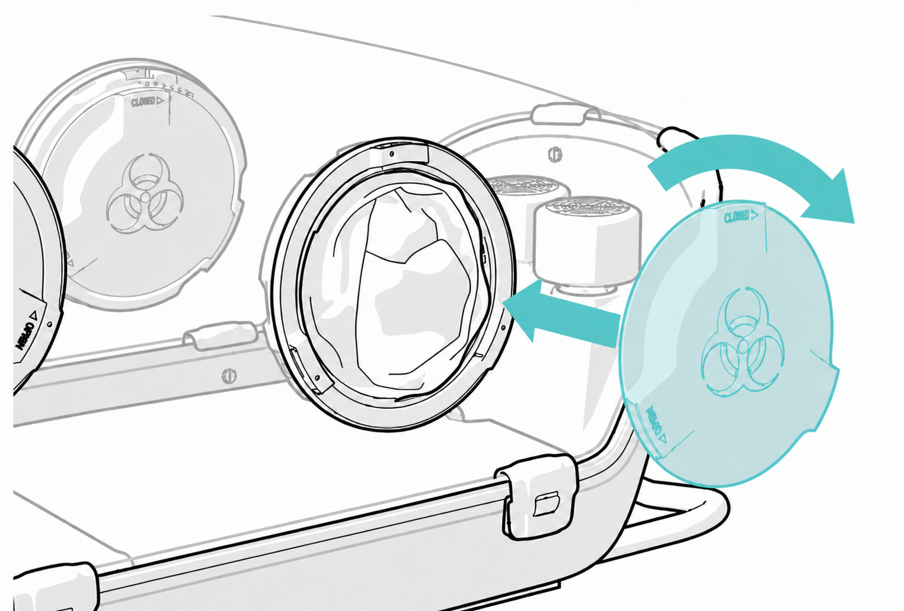
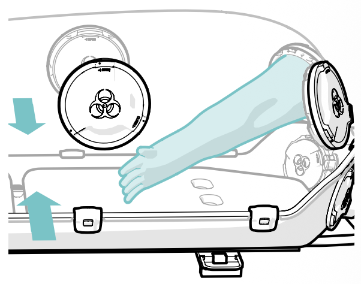
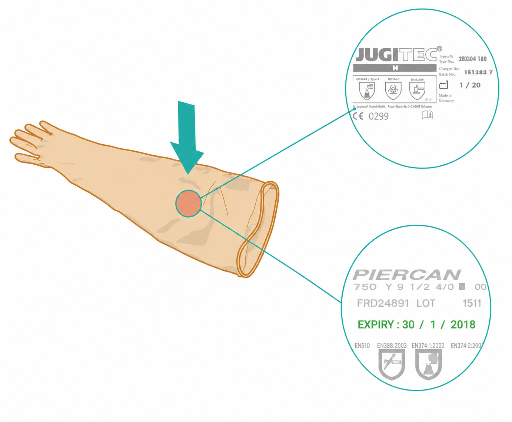

EpiPort 200
Vérification des gants
Avant chaque départ opérationnel, il est nécessaire de faire les vérifications suivantes :
1. Placement des gants
Vérifier que le placement des gants sur les EpiPorts 200 est adéquat selon l'organisation voulue.
Pour rappel, 7 des 8 emplacements sont destinés aux gants.

2. Bonne installation des EpiPorts
Procéder aux vérifications de sécurité mécanique de l'ensemble de la structure :
- Vérifier le bon serrage de l'ensemble des courroies.
- Vérifier la jonction gant / courroie.
- Vérifier le verrouillage des 3 clips rouges par EpiPort.
- Vérifier la bonne fermeture des trappes internes.
- Vérifier la bonne fermeture des trappes externes.




3. Intégrité et absence de perforation
Il est préférable d'ouvrir l'ensemble des trappes internes des EpiPorts 200 et de mettre en marche la pompe CleanAir en pression négative afin de procéder à ce contrôle.
En pression négative, les gants se déploieront vers l'intérieur, facilitant ainsi le repérage de toute perforation ou dégradation.

4. Date de péremption
Vérifier sur les gants déployés la date de péremption ou de production selon les modèles.
Les gants expirent 42 mois après leur date de production.
